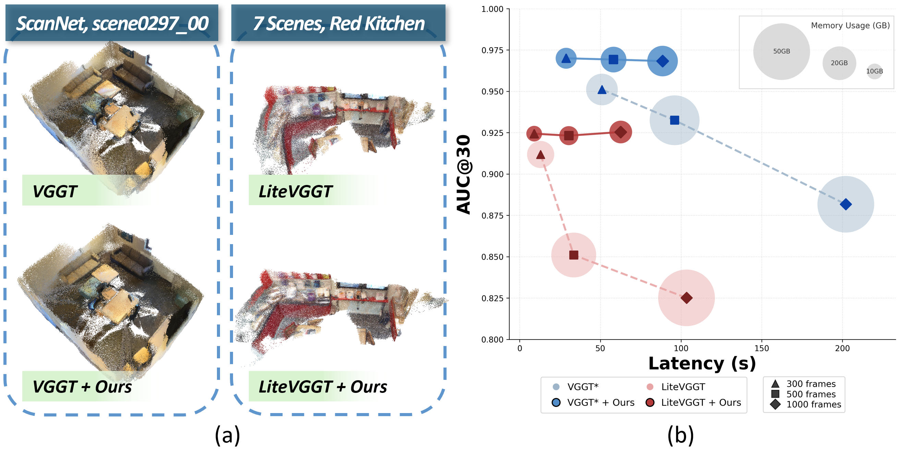
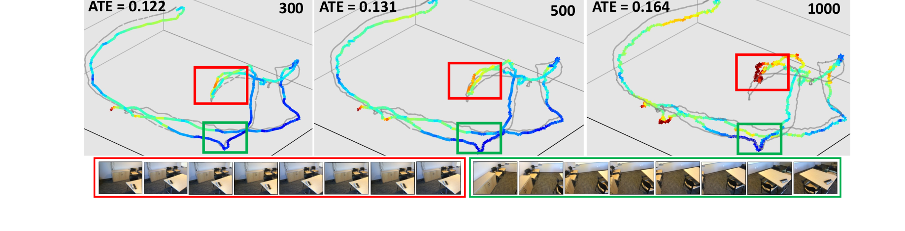

🎉 ECCV 2026 🎉
Geometry transformers such as VGGT achieve strong performance by jointly reasoning over multiple views with global attention. However, scaling them to large view collections remains challenging due to the quadratic cost of attention. Moreover, our empirical analysis reveals that reconstruction quality in VGGT is sensitive to the distribution of viewpoints: simply increasing the number of views without sufficient viewpoint diversity can even degrade performance, as redundant views introduce highly similar tokens that dilute informative geometric signals in the attention mechanism. Motivated by this observation, we propose a training-free and plug-and-play VGGT inference framework that organizes input views into diversity-aware balanced subsets, constructed through combinatorial graph partitioning over visual dissimilarity and spatial dispersion. This view organization lets the transformer focus attention on geometrically informative views while reducing redundant attention interactions. To estimate spatial dispersion without full pose estimation, we approximate pseudo spatial relationships via a soft pose-propagation strategy based on visual similarity from a small set of seed frames. Extensive experiments show improved camera pose estimation, multi-view depth prediction, and 3D reconstruction while reducing memory usage and inference latency. Our framework also complements existing VGGT variants, enabling scalable multi-view reconstruction without sacrificing geometric fidelity.

Diversity-aware partitioning improves reconstruction and scaling. (a) Dropped into VGGT and LiteVGGT, our method recovers cleaner, more detailed 3D structure. (b) Adding more frames slows prior methods down and even hurts their accuracy — ours stays accurate with a far better speed–accuracy trade-off.

More frames don't always help. Adding views can increase error: high-error regions (red) are dominated by near-duplicate views, while low-error regions (green) come from diverse viewpoints — motivating partitioning by viewpoint diversity rather than sheer frame count.
Animated walkthrough of the partitioning & reconstruction pipeline (PDF Figure 3).
Drag to rotate · scroll to zoom · right-drag to pan.
Ours (DA-VGGT)
Baseline (VGGT)
TBD